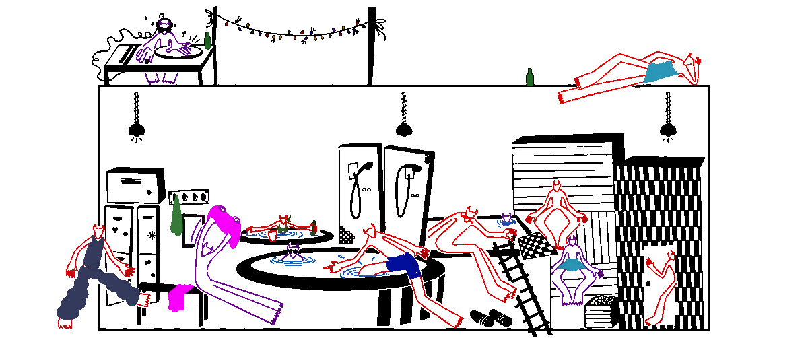
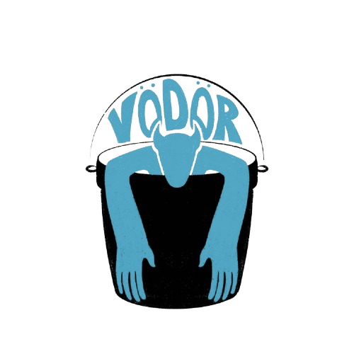
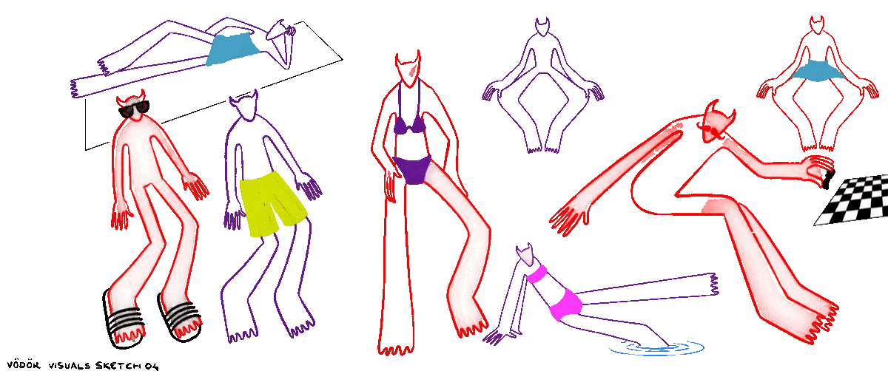

BUDAPEST · RIVERSIDE
VÖDÖR.
Community wood-fired container-sauna on the riverside

SEE YOU BY THE RIVER
Location
Bázel Csónakház
1033 Budapest, Mozaik utca 24.
A VÖDÖR. ÉPÜL

BUDAPEST · RIVERSIDE
Community wood-fired container-sauna on the riverside

SEE YOU BY THE RIVER
1033 Budapest, Mozaik utca 24.
A VÖDÖR. ÉPÜL
